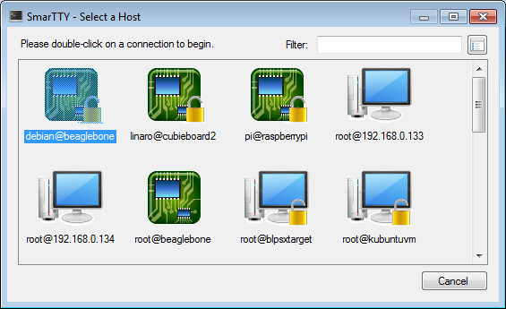

We have released a new version of SmarTTY, our free multi-tabbed SSH client. The new release focuses on improving usability and making common scenarios simpler. Let’s overview the main features of the new release:
In-place file editing
One of the common annoyances for Windows users when using ssh clients is the experience with editing remote files. Although most Linux systems have lots of editors ranging from vim to mcedit, their user experience is still way different from the Windows ones, especially if you are used to navigating with mouse.
SmarTTY 2.0 fixes that by adding support for editing files directly. Select “File->Open a Remote File” and SmarTTY will open a new tab that has the look and feel of a Windows file editor. This includes common shortcuts and mouse navigation.
{kind=link}
Press Ctrl-S and your changes will be automatically saved. Editing system files is also easy: if SmarTTY cannot overwrite a file, it will offer automatically retrying it with sudo:
{kind=link}
Minimalistic and full-screen modes
One major feedback we received from SmarTTY users was the relative large amount of GUI elements compared to other SSH clients. SmarTTY 2.0 features a new mode called “Minimalistic mode”. Activate it via the View menu and all extra controls will be hidden:
{kind=link}
This does not mean that they will be inaccessible! Simply move the mouse to one of the window edges and the controls docked on that side will appear:
{kind=link}
For those who find the window frame and title distracting too, we have added a full-screen mode. Combined with the minimalistic mode it gives a complete look-and-feel of a Linux console. Until you move the mouse to switch tabs or access other GUI.
Multiple sessions
SmarTTY 2.0 supports multiple sessions in one window. Instead of opening multiple SmarTTY windows, you can now add more sessions to the same window. Each session has its own set of tabs and file transfers, so they won’t get mixed up. By default, the sessions are displayed to the left and the tabs within a session are displayed below, but this can be changed via the settings window:
{kind=link}
Improved connection selector
The new connection selection window supports detailed view, connection aliases, name filter and changeable icons. As a result, finding the connection you are looking for is now easier and faster:
{kind=link}
Raw terminal
For those who sometimes want to connect to an embedded device via a USB2COM cable we have added a raw terminal. It supports both ASCII and HEX views (or both at the same time) and allows sending normal text and binary data:
{kind=link}
SmarTTY is free for both personal and commercial use and can be downloaded from http://smartty.sysprogs.com/download/